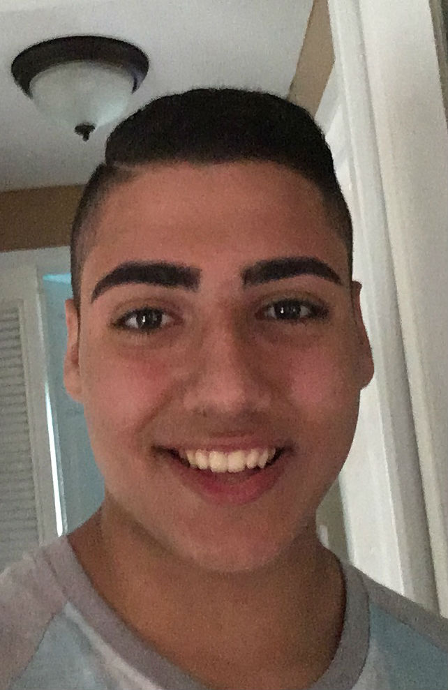

A Little Bit About Me
Hi My name is Dustin Odeh, I am 20 years old and currently enrolled at Michigan State University as a Junior. I enjoy learning as it makes me appreciate the work others have put into learning the material themselves. I thoroughly love playing video games, the rush of competitive play is so exciting! Therefore, I have decided during my high school years that I want to be a game designer. I have been taking computer classes quite frequently in order to get more familiar with coding in general, although I prefer to work within the game engine itself and focus more solely on level design. I will continue taking these classes my last few semesters in college.
I also enjoyed playing sports in high school, I played football, wrestling, and soccer.
- Football: I was many positions throughout my football days. It started with linebacker, then went to right guard on the O-line, and then defensive end on the D-line. I even proved my speed over the years playing at my school and was asked to be runningback. Unfortunately, before I could be runningback, I broke my ankle in a wrestling match and had to stop sports alltogether.
- Wrestling: I played up until my Junior year, when I broke my ankle in a match against a tough opponent just barely fitting within my weight class.
- Soccer: I was an avid goalkeeper, making sure that no one scored to the best of my capability. I had to stop after my wrestling incident.